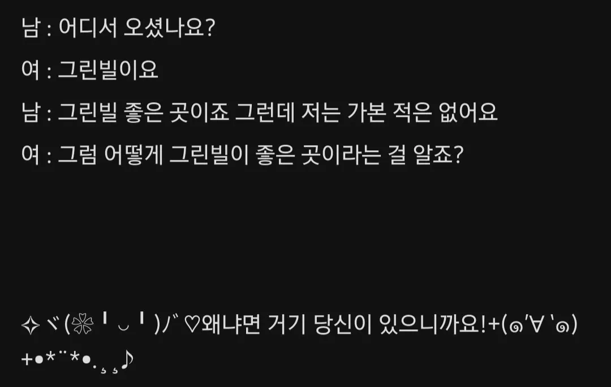

에버랜드 좋지
여자친구도없고 친구도없어서같이갈사람 없는데 에버랜드 좋은걸어떻게알죠?
내가 해봤어 혼자 차끌고 에버랜드 가서 혼자 뽀로로 극장 가보고 t익스프레스 타보고 뷔페 식당가서 거의 3시간 앉아서 외국인 가족들 들어오는거 보고 그러니까 직원분이 와서 설문조사 부탁드린다고 주고 답례로 멘토스 주더라 그게… 15년전이던가 그 이후로 놀이공원 끊었다
용: 인 에버랜드 혼자 갔다
인: 제 안 간다
용 인이
인 제보다 좋다
인제
그러시군요
용인이 당신을 용인해줬군요.
용인! 더러워!
용인할 수 없어
잉 곱지
용인은 나쁜 곳이에요 왜냐하면 개붕이가 그곳에서 왔기 때문이죠 역겨워..
처인구 사나보네
동물의 왕국 좋은 곳이에요
누가 물어봤나요?
고림고앞에서 맞짱뜨자는사람 사는곳이잖아
오케이 확인 실전에 적용해볼께

'이렇게 생겼으면 사용하지 마세요'
너 내 침대로 올라오도록


준비물 : 얼굴
알죠? 얼굴이 되야 저 멘트가 됩니다.
웃기는건 얼굴 안되도 가능하다 ㅋㅋ
미리 말을 해줬어야죠
대전 좋지요 가본적은 없어요 거기에 성심당이 있잖아요
멘트 좀 치네 ㅋㅋ
저게 행복이지 ㅋㅋㅋㅋ
영업 잘하누 ㅋㅋㅋㅋ
게이클럽이요
개포동에 그린빌 있다 짜슥아

저런건 누가 알려주는걸까
자연스레 배웠다면 어떻게 배운걸까
너도 지금 하나 배웠네
센스는 배우는 게 아닌 거 같음
가운데 파란시계 누님은 혼자 마셨어? 빈그릇이야 ㅋ
손가락누님 딱 요요요요!요새끼봐라
저는 용인에서 왔어요